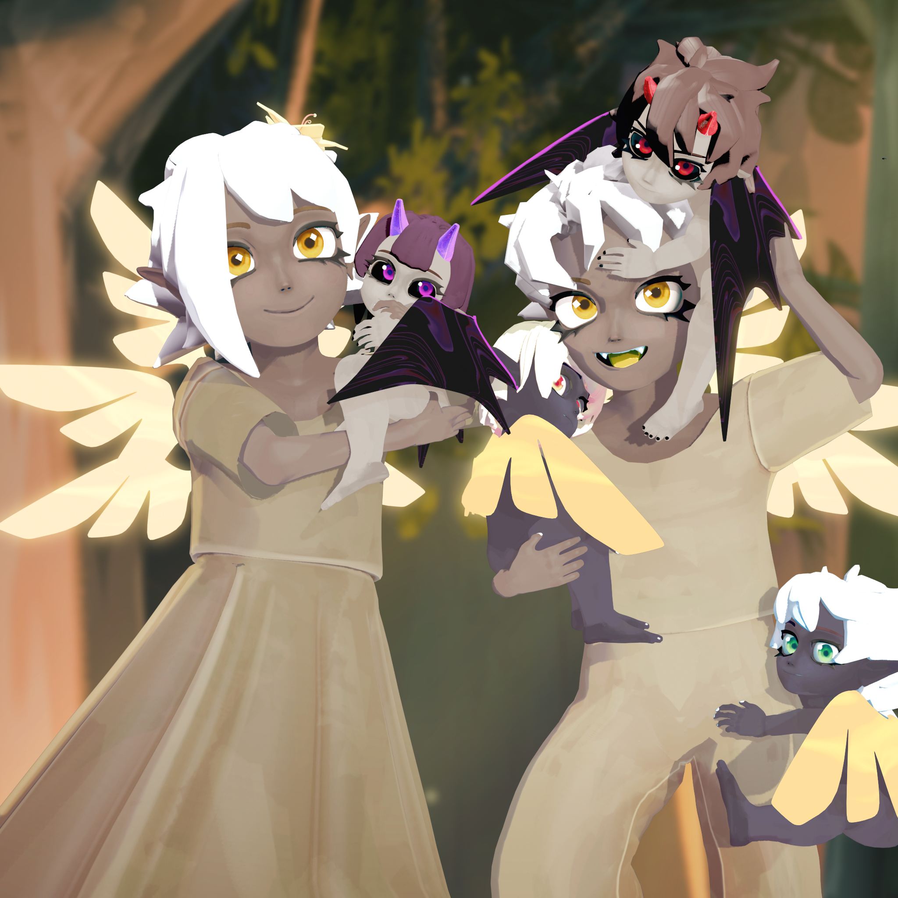

幕後花絮
Behind the Scenes
《光與塵》的誕生，並非一蹴而就。從最初的世界觀設定、角色關係的反覆推敲， 到視覺風格的嘗試與修正，每一個階段都留下了大量未被看見的思考與取捨。
這些幕後片段記錄了創作過程中的迷惘、修正與突破， 也是作品逐漸成形的重要痕跡。它們並非最終成果， 卻構成了世界真正誕生的軌跡。

Behind the Scenes
《光與塵》的誕生，並非一蹴而就。從最初的世界觀設定、角色關係的反覆推敲， 到視覺風格的嘗試與修正，每一個階段都留下了大量未被看見的思考與取捨。
這些幕後片段記錄了創作過程中的迷惘、修正與突破， 也是作品逐漸成形的重要痕跡。它們並非最終成果， 卻構成了世界真正誕生的軌跡。
